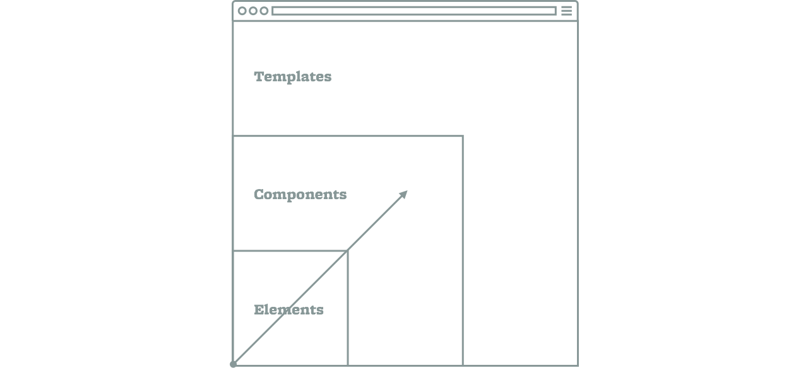
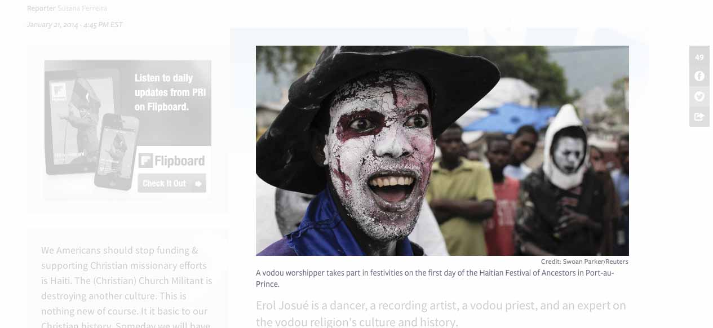
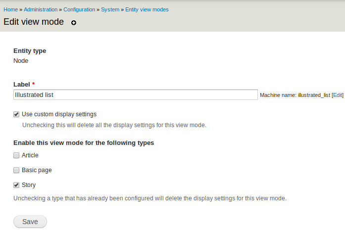

Palantir.net
Design Systems and Drupal
Presented by Larry Garfield (@Crell) and Carl Martens
@Crell
- Senior Architect, Palantir.net
- Drupal 8 Web Services Lead
- Drupal Representative, PHP-FIG
- Advisor, Drupal Association
- Loveable pedant
Carl Martens
- Senior Designer, Palantir.net
- I live here in Minnesota!
The Key to Design Nirvana
Think Systems, Not Pages.
Why Design in Systems?
- Consistency (Visual + Content)
- Efficiency (Production)
- Sustainability (Life After Us)
sys•tem | ˈsistəm | noun
A set of interconnected parts forming a complex whole.
Interconnected Parts
Elements, Components, Templates
Complex Whole
A CMS-Driven Site
Interconnected Parts
Elements, Components, Templates
H1–H6, p, a, ul, ol, hr, blockquote, form elements, etc.
Interconnected Parts
Elements, Components, Templates
Header, footer, navigation, hero element, call-to-action, etc.
Interconnected Parts
Elements, Components, Templates
General page, home page, landing page, listing page, etc.
Atomic Design
Interconnected Parts
Elements, Components, Templates
Complex Whole
A CMS-Driven Site

Step One
Start at the Beginning

Elements: H1–H6, p, a, ul, ol, hr, etc.
Step Two
Get to Know Your Content
Why are people coming here?
The Story
- Title
- Date
- Section
- Author
- Program
- Lede text
- Body text
- Lede image
- Lede image caption
- Lede image credit
- Program sound clip
- Inline embedded content
- Comments
- Share controls
- Taxonomy
- External links
- Related content
Step Three
Combine Colors & Elements to Create Components, and Your First Template
Story Header: Date, Author, Title, Program, Section

Ad Block

Lede Image, caption, credit 
Share controls

Step Four
Make More Templates!
Mind what you have learned...
Analyze Your Content
What Should Go on the
Home Page?
Why people are coming here Again? For Stories!
The Story
- Title
- Date
- Section
- Author
- Program
- Lede text
- Body text
- Lede image
- Lede image caption
- Lede image credit
- Program sound clip
- Inline embedded content
- Comments
- Share controls
- Taxonomy
- External links
- Related content
The Story Item
- Title
- Date
- Section
- Program
- Lede text
- Lede image
- Share count
Story Item: Lead Feature Title, Date, Section, Program, Lede text, Lede image, Share count
Story Item: Square Featured
 Title, Date, Section, Program, Lede text, Lede image, Share count
Title, Date, Section, Program, Lede text, Lede image, Share count
Story Item: Illustrated List Title, Date, Section, Program, Lede text, Lede image, Share count
Story Item: Illustrated List Compact
 Title, Date, Section, Program, Lede text, Lede image, Share count
Title, Date, Section, Program, Lede text, Lede image, Share count
Story Item: List Compact
 Title, Date, Section, Program, Lede text, Lede image, Share count
Title, Date, Section, Program, Lede text, Lede image, Share count
The Good News
Creating Another Page Gets Easier Every Time
Atomic Design
What does that have to do with Drupal?
Drupal is a Content Management... System
Step One
Type and Color
Drupal doesn't care
Step Two
Get to know your content
In the biz, this is called Content Strategy
Specifically, Data Modeling
The Story
- Title
- Date
- Section
- Author
- Program
- Lede text
- Body text
- Lede image
- Lede image caption
- Lede image credit
- Program sound clip
- Inline embedded content
- Comments
- Share controls
- Taxonomy
- External links
- Related content
Build spec
Proper prior planning prevents piss poor performance
Build spec
Build spec
Step Three
Create components and templates
Component == Visual representation of content
Visual representation of content == Drupal View Mode
Component == View Modes!
Sprinkle magic theming fairy dust
node-full.tpl.php + CSS
Step Four
More components,
more templates!
Illustrated list (image style)

Illustrated list (view mode)
Illustrated list (view mode)
Views
This is a design tool, too...
Content assembly!
Views
In summary...
Drupal is a very designer-friendly CMS!
… if you design in systems
The most important step is understanding your content
...in the abstract
If it's hard to build,
your design system could use improvement
If a design element doesn't fit the system,
you probably don't need it
A system is a system
Use the same system across your project
Designers and developers define the system together
Larry Garfield
Making the Web a Better Place
Keep tabs on our work at @Palantir